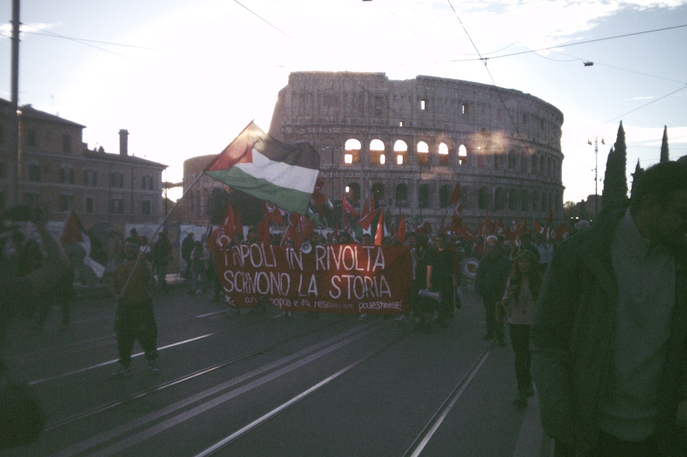
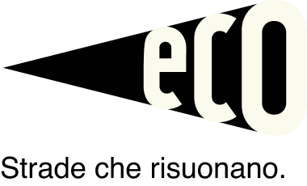
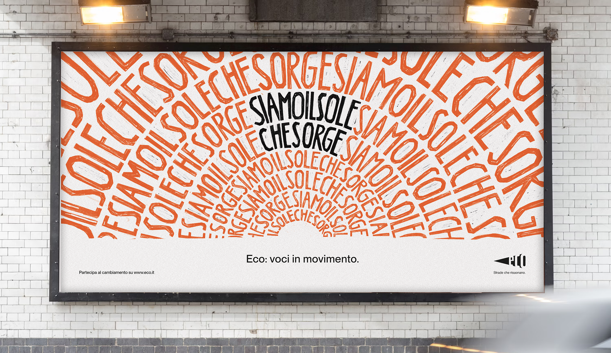
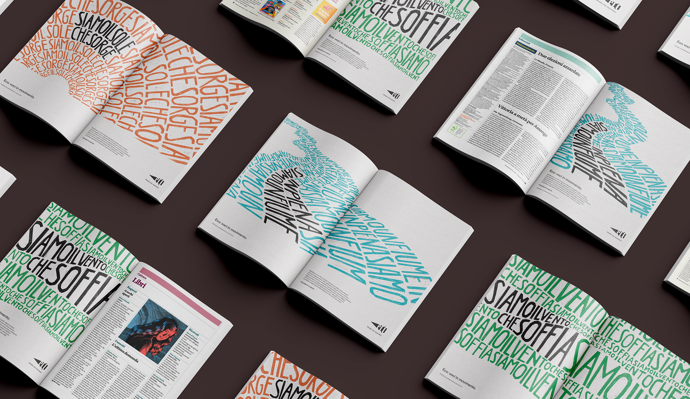
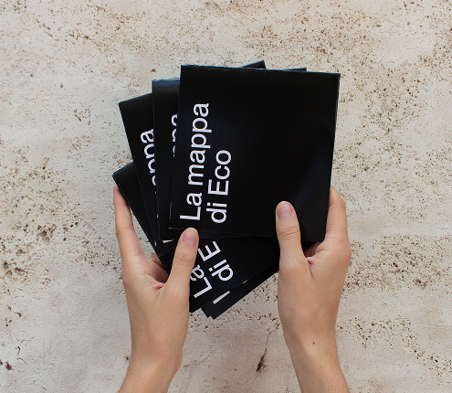
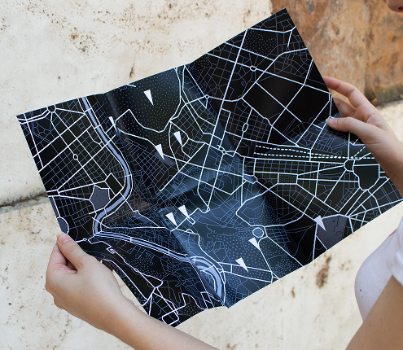

Eco is a systemic design project created to spread knowledge and awareness of the historical importance
of demonstrations and the role they have played in social, political and economic change. It is also an active tool supporting protest, helping people rediscover taking to the streets as a meaningful way to exercise the right to make their voice heard.


How can we represent the strength of protesters while distancing
ourselves from the violent imagery often associated
with demonstrations? By talking about energy.
The strength of the voices in the marches is compared to the energy
of nature which, in its many forms, becomes a metaphor
for the power of community.


The app gives users a tool to take an active part
in protests: like an events platform,
but dedicated to demonstrations.
The website is both playful and educational: taking part
means discovering the history and culture of protest.
With the Ecopoints, the project steps out of digital platforms and becomes part of the social fabric. By involving local businesses, finding each stop turns into a treasure hunt for the user,
where unlocking hidden content means finding
and framing the Eco logo. At the Ecopoints, besides buying
merchandise, you can ask for the paper map
and the sticker for that stop.

